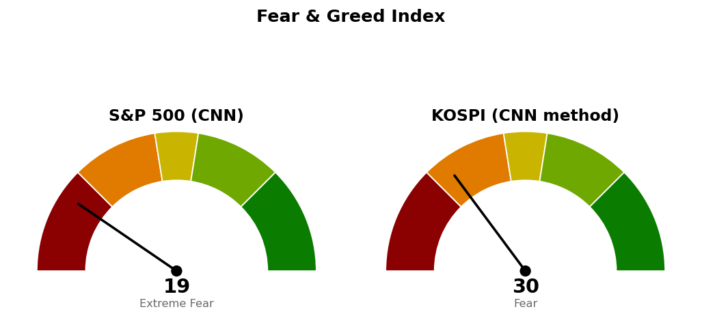

2026-11-04 장전 예측 4건: 4건 중 2건 적중(50.0%)
| 예측 | 근거 | 실제 | 판정 |
|---|---|---|---|
| 코스피 종가 5,773 하회 | 기준선 6,032 앞 첫 저항 5,773~5,835 구간(6번 반응 5,773·피보나치 50% 되돌림 5,835·5,800 라운드) 종가 회복 실패 — 전일 종가 5,626에서 하루 평균 변동폭의 0.56배 위, 간밤 나스닥 +0.83%·나스닥 선물 +1.20%를 반영해도 시가 위쪽의 저항 | 종가 5,662 (+0.24%) | 적중 |
| 코스피 장중 저가가 5,616 위 유지 | 11/3 저가 5,616 재이탈 없음 — 간밤 나스닥 +0.83%, S&P 500 +0.36%, 나스닥 선물 +1.20%, S&P 500 선물 +0.60% | 저가 5,422 | 빗나감 |
| KODEX 반도체, KODEX 200 대비 강세 마감 | 간밤 미국 기술 업종(XLK) +1.31%(1일 초과수익 +0.95%p), 반도체 20일 초과수익 -11.15%p(11/3 마감 후 기준)로 낙폭이 큰 쪽의 반등 | +2.01% 대 KODEX 200 +0.10% | 적중 |
| KODEX 은행, KODEX 200 대비 약세 마감 | 간밤 미국 금융 업종(XLF) -0.64%(1일 초과수익 -1.01%p), 은행 20일 초과수익 +7.99%p·11/3 1일 +2.39%p(11/3 마감 후 기준)로 하락일 방어 수요가 되돌려질 쪽 | +0.83% 대 KODEX 200 +0.10% | 빗나감 |
KR 최근 90일 누적 50건 중 27건 적중(54.0%) · 최근 20건 20건 중 12건 적중(60.0%)
코스피 저가 5,616 위 유지를 걸었으나 저가는 5,422였습니다. KODEX 은행 약세를 걸었으나 +0.83%로 KODEX 200 +0.10%보다 강했습니다.
| 가격 | 판정 방식 | 결과 |
|---|---|---|
| 기준선 6,032 | 일봉 종가 상회 | 미충족 — 고가 5,828, 잠정 종가 5,662 |
| 도착지 6,409 | 장중 고가 도달 | 진행 중 — 고가 5,828 |
| 다음 지지 5,400 | 일봉 종가 하회 | 미충족 — 저가 5,422, 잠정 종가 5,662 |
| 사다리 1차 5,263 / 취소선 4,900 | 장중 저가 / 일봉 종가 | 미도달 — 저가 5,422 |
장전의 저가 5,616 유지 판단은 틀렸습니다(저가 5,422). 높은 출발 예상은 시가 5,786으로 맞았습니다. "못 지키면 5,200~5,328"은 열리지 않았고 하락은 5,400을 22포인트 남긴 5,422에서 멈췄습니다. 어느 선에도 닿지 않아 직전 계획을 그대로 유지하며 다섯 가격 모두 같습니다. 직전 마감 후 회차가 "볼 것"으로 적은 5,451은 11:30~13:30에 장중 이탈했고 종가로는 지켰습니다.
정정: 11/3 코스피 종가를 5,626(-3.98%)으로 적었으나 확정치는 5,649(-3.59%)이고, 10/30은 5,713(-3.78%)으로 적었으나 확정치가 5,731(-3.48%)입니다. 판정이 바뀌는 선은 없습니다.
오늘 범위는 5,422~5,828로 하루 평균 변동폭의 1.49배입니다. 시가 5,786으로 5,773~5,835 구간 안에서 열렸으나 고가 5,828에서 구간을 넘지 못했고, 이 구간이 위쪽 첫 저항으로 남습니다. 저가 5,422는 5,400~5,451 구간 안이며 오늘 거래량은 20일 평균의 0.91배입니다. 기준선 6,032는 하루 평균 변동폭 안의 거리가 아니고 그 앞에 5,773~5,835와 5,923~6,000 두 구간이 있습니다. 경로를 말할 근거가 없어 방향은 말하지 않고 기준선과 두 갈래만 냅니다. 나스닥 선물은 28,464(+1.20%, 장전)에서 28,195(-0.39%), S&P 500 선물은 7,620에서 7,574(-0.31%)로 내려왔고, 11/5 코스피 시가는 오늘 밤 미국장 결과(나스닥 다음 지지 25,131·S&P 500 다음 지지 7,541)에 선행 종속됩니다.
등록된 ETF 스윙 계획이 없습니다. 지수가 200일선 아래(6,505 대비 -12.95%, 10/13부터)라 이번에는 ETF 스윙 계획을 내지 않습니다.
한국 섹터는 테마형 ETF 기준이라 미국 업종 ETF와 성격이 다릅니다. 상위 2개는 직전과 같은 헬스케어·은행이며 3위 건설과 은행의 차이는 0.08%p입니다. 국면 때문에 두 ETF 모두 스윙 계획 대상에서 빠졌습니다. 미국은 헬스케어(+13.33%p)·필수소비재(+11.94%p)가 20일 상위, 기술(-9.42%p)·커뮤니케이션(-5.95%p)이 하위입니다.
종목 발굴: 코스피가 200일선 아래라 오늘 한국 후보는 나오지 않았고, 발굴 리포트도 나가지 않습니다.

S&P 500은 CNN 공식값이며 정크본드 수요 2.4·안전자산 수요 4.0·모멘텀 14.2가 가장 낮고 시장 폭 42.0이 가장 높습니다(1주 전 34.4, 1개월 전 38.2). 코스피는 CNN 방식을 한국 데이터로 재구성한 값(공식 지수 아님, 7개 항목 모두 사용)이고 기준일이 11/3이라 오늘 세션은 반영되지 않았습니다. 모멘텀 5.6·안전자산 수요 12.8이 점수를 끌어내렸고 풋/콜 73.8이 끌어올렸습니다(1개월 전 54.8).
1. 지수 사다리: 이번엔 살 자리가 없습니다. 5,263 장중 도달 시 계좌의 2% 1차 분할 매수, 4,900 일봉 종가 이탈 시 남은 회차 중단·산 회차는 다음 세션 전량 매도 (사다리 취소). 2. ETF 스윙: 진입 중인 계획 없음, 새 계획 없음. 3. 상방: 일봉 종가 6,032 상회 시 도착지 6,409까지 열립니다. 하방: 일봉 종가 5,400 하회 시 5,200~5,328 구간(사다리 1차 5,263)을 봅니다.
다음 세션에 볼 것: 11/5 코스피 종가가 5,773~5,835 구간 위로 올라서는지.
ATR(하루 평균 변동폭): 최근 14일 동안 하루에 오르내린 폭의 평균.
상대강도지수(RSI): 최근 14일 오른 폭과 내린 폭의 비율을 0~100으로 나타낸 값.
20일 초과수익: 최근 20거래일 수익률에서 기준 지수 수익률을 뺀 값.
20일선·50일선: 최근 가격에 무게를 더 둔 지수이동평균.
200일선: 최근 200거래일 종가의 단순 평균.
피보나치 되돌림: 직전 상승폭의 일정 비율만큼 되내린 가격을 계산한 선.